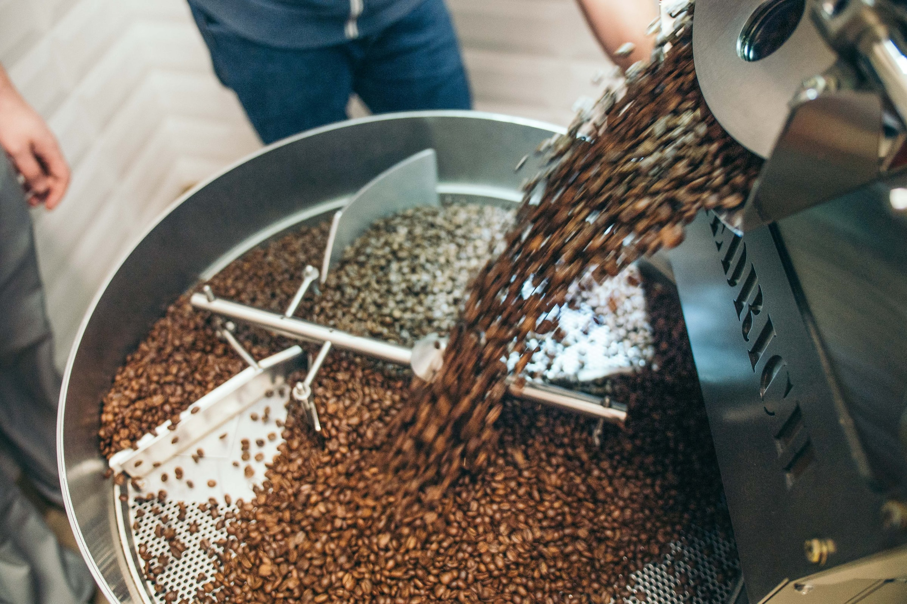

최현호가 바꿨다.
COFFEE ROASTING
이 페이지는 HTML을 공부하기 위해 탄생한 페이지 이지만
이후에는 커피와 커피 로스팅을 위한
메모 페이지로 사용하고자 합니다.
HELLO HTML !
컴퓨터 공학은 한 편의 시와 같다... 크...
시를 통해 커피 로스팅을 표현해보기로 한다.
시작해보자 ! 시작 못하겠다면 나는 답이 없다.
커피 로스팅 /
감사의 말씀
- 목 차 -
<
- 소개
- 이론
- 실습
- 그외1
- 그리고2
-
">그다음
>
참여자
- 조성윤
- 김한나
페이지를 읽는 분들에게 전하는 말씀
글쓴이의 IT개발 일기로 바로가기
